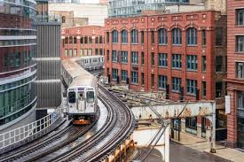
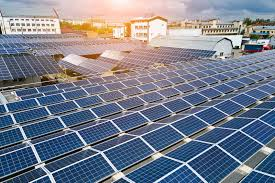
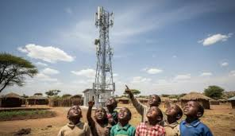
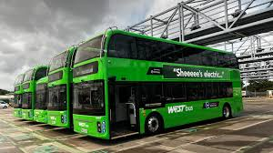
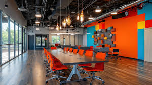

What is OrangeBridge?
OrangeBridge is our initiative focused on resilient infrastructure, inclusive and sustainable industry, and community-powered innovation.

Inclusive infrastructure
Basic services like roads, electricity and internet should be available to everyone, including rural and remote areas.
Innovation for good
Research and development help create new solutions—from medical devices to renewable tech—that improve lives.

Green industry
Industries can reduce emissions and waste by using clean energy and efficient processes.
Our focus areas
- Develop quality, reliable, sustainable and resilient infrastructure.
- Promote inclusive industrialization and decent jobs.
- Increase access to financial services and affordable credit for small enterprises.
- Upgrade industries to make them sustainable and more efficient.
- Support research, innovation and access to information and communications technology.
How OrangeBridge supports other goals
- SDG 7 (Energy): Industry powered by clean energy reduces emissions.
- SDG 11 (Sustainable Cities): Smart transport and utilities make cities livable.
- SDG 4 (Quality Education): Internet access expands learning everywhere.
- SDG 13 (Climate Action): Innovation speeds up climate solutions.
Challenges today
- Rural areas lacking fast, affordable internet.
- Old infrastructure vulnerable to extreme weather.
- Small businesses struggling to access finance and tools.
Case studies

Rural broadband
Community networks bring affordable connectivity to remote villages.

Electric buses
Cities cut noise and air pollution with clean public transport.

Startup incubators
Spaces that help young inventors prototype, test and launch.
"Innovation distinguishes between a leader and a follower." — Steve Jobs